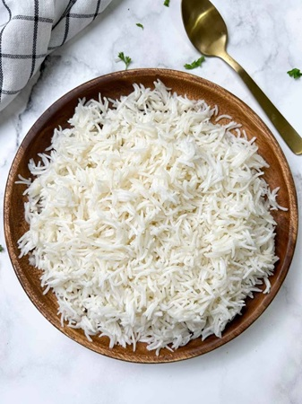
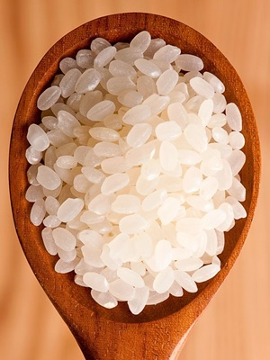
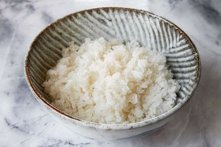
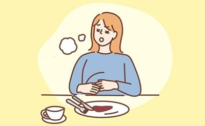

Long Grain Rice
Long grain rice includes white long grain, brown long grain, jasmine and basmati
Long grain rice includes white long grain, brown long grain, jasmine and basmati

Medium grain rice includes arborio, vialone nano, carnaroli and forbidden black

Short grain rice includes sushi rice, brown short grain and bomba

Rice has a lot of starch, which is a good source of carbohydrates
Brown rice contains vitamins B1(thiamin),
B3(niacin), B6(pyridoxine) and vitamin E
Brown rice contains calcium, manganese, magnesium, selenium and phosphorous
Since it is rich in carbohydrates, it provides lots of energy for the body
These vitamins and minerals helps to keep the body function normally
Brown rice takes longer to digest since it has more dietary fibre which cannot be broken down. Therefore, digestion is slowed down and keeps someone full for longer

Click the rice to eat it! Avoid the white rice! (Score 30+ to win)
Has not started